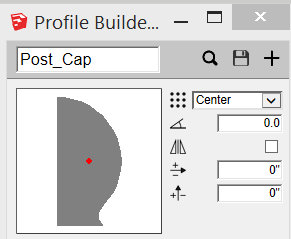
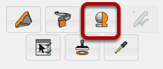
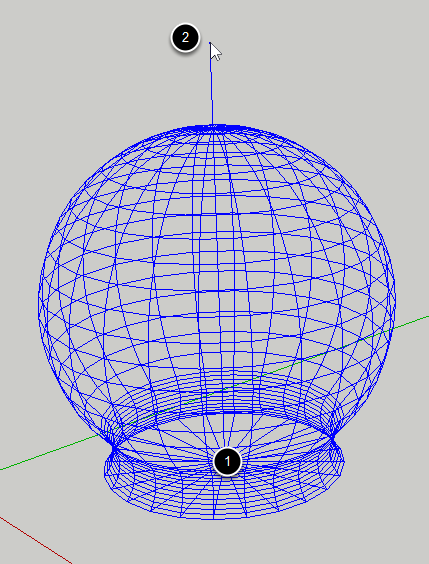
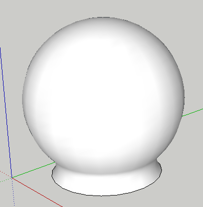

Create or Load a profile that you would like to revolve around an axis.

Click the 'Revolve Profile' button in the Profile Builder dialog.

1. Click anywhere in the SketchUp model to set the origin of the revolve axis.
2. Click again to define the direction of the axis.
TIP: Use the Measurements box to set the number of sides.

Note: No matter what settings you are using for the Profile, the profile will always be revolved about the bottom left corner of the Profile bounding box.
Revolved Profile Members behave just like other Profile Members except for one thing:
You cannot edit the path of a Revolved Profile Member.